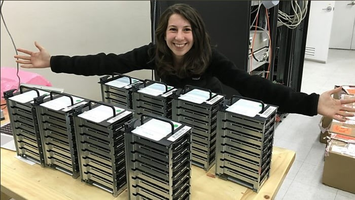

Informatica INACAP - Curico
Los 5 trabajos digitales más demandados en 2019
La tecnología está revolucionando la vida laboral a pasos de gigante. Es la llamada digitalización de la economía. Y con ella están apareciendo nuevas profesiones.
1. Especialista en ciberseguridad "Los profesionales de seguridad de datos, información, redes y seguridad en la nube están en demanda, ya que las empresas cada vez confían más en los datos para sus operaciones comerciales diarias" "Y deben mantenerse al tanto de las regulaciones de cumplimiento de la industria, las tendencias de seguridad futuras y garantizar que el hardware, el software y las redes de la empresa permanezcan seguros".
2. Desarrollador de blockchain LinkedIn, la red social profesional más grande de internet, dice que es el sector de empleo de mayor crecimiento. La compañía asegura que la demanda de desarrolladores de blockchain ha aumentado 33 veces en el último año en Estados Unidos. Se trata de una especie de base de datos descentralizada que en español puede traducirse como "cadena de bloques" y que agrupa información contenida en conjuntos (bloques).
3. Ingeniero de aprendizaje automático (machine learning) "La inteligencia artificial llegó para quedarse. Los campos de la robótica seguirían creciendo en campos y funciones relacionados con la inteligencia artificial".
4. Arquitecto de la nube (Cloud) La arquitectura de computación en la nube se ha convertido en el método preferido por muchas empresas para almacenar sus datos. Por eso los arquitectos de nube (o arquitectos cloud) están entre los trabajos digitales más demandados.
5. Analista de inteligencia de negocios Estos profesionales se ocupan fundamentalmente de analizar datos que la empresa utiliza para tomar decisiones. Su trabajo consiste en maximizar la utilidad de los datos. La business intelligence, que es la habilidad para transformar datos en información que puede usarse para optimizar costos, analizar la rentabilidad o entrar a nuevos mercados, entre otras cosas.
.
1. Especialista en ciberseguridad "Los profesionales de seguridad de datos, información, redes y seguridad en la nube están en demanda, ya que las empresas cada vez confían más en los datos para sus operaciones comerciales diarias" "Y deben mantenerse al tanto de las regulaciones de cumplimiento de la industria, las tendencias de seguridad futuras y garantizar que el hardware, el software y las redes de la empresa permanezcan seguros".
2. Desarrollador de blockchain LinkedIn, la red social profesional más grande de internet, dice que es el sector de empleo de mayor crecimiento. La compañía asegura que la demanda de desarrolladores de blockchain ha aumentado 33 veces en el último año en Estados Unidos. Se trata de una especie de base de datos descentralizada que en español puede traducirse como "cadena de bloques" y que agrupa información contenida en conjuntos (bloques).
3. Ingeniero de aprendizaje automático (machine learning) "La inteligencia artificial llegó para quedarse. Los campos de la robótica seguirían creciendo en campos y funciones relacionados con la inteligencia artificial".
4. Arquitecto de la nube (Cloud) La arquitectura de computación en la nube se ha convertido en el método preferido por muchas empresas para almacenar sus datos. Por eso los arquitectos de nube (o arquitectos cloud) están entre los trabajos digitales más demandados.
5. Analista de inteligencia de negocios Estos profesionales se ocupan fundamentalmente de analizar datos que la empresa utiliza para tomar decisiones. Su trabajo consiste en maximizar la utilidad de los datos. La business intelligence, que es la habilidad para transformar datos en información que puede usarse para optimizar costos, analizar la rentabilidad o entrar a nuevos mercados, entre otras cosas.
.
Katherine Bouman. La chica que ideó el algoritmo para ver un agujero negro
Observar objetos distantes es extremadamente difícil porque la resolución de un telescopio es insuficiente. Se necesitaría uno muy grande para captar más detalle. Para solucionar estos se usa una técnica llamada “interferometría”. Se hacen capturas de varios telescopios en diferentes lugares para formar una sola imagen.

Como están separados, es necesario reconstruir la imagen completa a partir de diferentes partes. Aquí es donde entra la genialidad de la Katherine Bouman como están separados alrededor de la Tierra, significa que también observan el objeto desde un ángulo distinto. Hay que corregir esas diferentes perspectivas cuando estés rearmando la imagen.
Pero como la Tierra rota esos ángulos no van a ser siempre iguales. Además, las diferentes posiciones de la tierra también significan que la misma onda de luz va llegar a diferentes tiempos a cada telescopio. Si la luz viaja en el vacío es fácil, pero llega a la atmósfera y ya no se propaga igual. Se defasa.
Hasta que Bouman se dió cuenta que utilizando tres referencias se puede hacer una corrección. Con todo esto hay una infinidad de imágenes que podrían resultar. ¿Como saber cual es la mas probable? Para ello los algoritmos deben “entrenarse” con probabilidades a priori de cómo debería verse un objeto astronómico sin influenciar el resultado.
Esas técnicas salen de probabilidades estadísticas bayesianas y la distribución de Gauss. Es decir, técnicas de machine learning (aprendizaje automático). El ruido de las imagines esta distribuido de forma gaussiana. La data recolectada son PETABYTES por todos los telescopios. Por lo que fue necesario enviar los discos por correo aéreo.
Para saber más del algoritmo utilizado.
.
Pero como la Tierra rota esos ángulos no van a ser siempre iguales. Además, las diferentes posiciones de la tierra también significan que la misma onda de luz va llegar a diferentes tiempos a cada telescopio. Si la luz viaja en el vacío es fácil, pero llega a la atmósfera y ya no se propaga igual. Se defasa.
Hasta que Bouman se dió cuenta que utilizando tres referencias se puede hacer una corrección. Con todo esto hay una infinidad de imágenes que podrían resultar. ¿Como saber cual es la mas probable? Para ello los algoritmos deben “entrenarse” con probabilidades a priori de cómo debería verse un objeto astronómico sin influenciar el resultado.
Esas técnicas salen de probabilidades estadísticas bayesianas y la distribución de Gauss. Es decir, técnicas de machine learning (aprendizaje automático). El ruido de las imagines esta distribuido de forma gaussiana. La data recolectada son PETABYTES por todos los telescopios. Por lo que fue necesario enviar los discos por correo aéreo.
Para saber más del algoritmo utilizado.
.